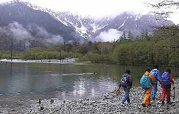

春の上高地 | ２００２．０５．１８ |
|  大正池の朝 | ＜参加者＞ ベッシーさん・シュガーさん・いづみさん・ハチさん・のび太 ※夕食会から キッカーさん ＜日程＞ 5/17 19：40 静岡発 5/18 2：20 茶嵐に到着し、テント設営後に仮眠 8：20 タクシーにて出発 8：40 大正池に到着 12：20 明神橋で休憩（〜12：40） 13：30 上高地ビジターセンター着 14：00 上高地バスターミナルからタクシーに乗車 14：50 茶嵐を出発 20：10 静岡市内で夕食会（中国料理） 23：00 磐田着 |
| ＜体験記＞のび太 道の駅「とみさわ」からシュガー号で茶嵐へ。終始ドシャブリの雨で、ノンビリ走行。車中で会話していると「のび太」語録が出来そうになるが、覚えている人、いないよね。 仮眠のために雨の中、駐車場でテント設営。そして予想通り、５時前に駐車場集金（500円）のおばさんが現れて、みんな起こされる。 雨は朝になっても止まず、なかなか足が上高地に向かない。(;_;)シクシク・・・ タクシー１台で大正池に移動。記念撮影後、ベッシーと別行動。 新緑の中をのんびり歩き、河童橋手前の食堂で、コーヒーブレイクする。梓川右岸（河童橋〜明神池）の湿原は気持ち良い。明神橋付近のニリン草のピンク色が印象的。(デジカメの電池切れで撮影されてなく、残念！) |  大正池 |
 今回評判の写真（決して餌をやってません） | 明神館前の休憩所で昼食。食事中に雨が降らなかったのが、せめての救い。13：30にベッシーと合流し下山。 ＜体験記＞いずみ茶嵐に着くと天気は薄曇り状態。「いまいましさ」をかみ殺して帰路に。松本市街などでの渋滞もなく、順調に静岡まで戻る。クライミングジムにいたキッカーと合流し、中華料理店にて反省会？をする。 雨で穂高岳も見えなかったけど、何てったって初めての上高地！（鴨に餌をあげるふりもしたし。野鳥にむやみに餌をやっては行けないモンね） その新緑の美しさと水の透明度、そしてニリンソウの群生の可憐さに感動しちゃいました♪（そー言えばそんな歌あったよね） 行って良かったです。 でも、青天の上高地にも触れてみたいっ！！ やっぱり、リベンジ？ |
| べっしー 早くも大正池で、みんなと別行動をとる。前回もそうだが、大正池は非常に撮りたいところが多い。水は澄んでいるんだけど緑色に近く（難しい・・）、立ち枯れの木や霧が発生しやすいためか、撮影に向いている。 あいにくの雨模様で、カメラを雨からガードしながらの撮影となった。(T_T) 上高地は雨に打たれながらも、澄んだ水の色をたたえ緑の色を増していた。 大正池で鴨などを撮りながら、河童橋方面へ。 田代池は前回より整備がされていて歩きやすくなっていた。しかし、柵が多くなり撮影ポイントが限られている。私はこれで良いのだと思う。あまりにもマナーの悪いカメラマン（だけでは無いのだが）が、そこら中を荒らしまくるからだ。自然を大切にしない者に撮る資格は無い。撮れる所から楽しみましょう！ 穂高は雲に隠れよく見えず。本当なら新緑＋残雪の穂高で最高なのにな〜 イズミさんでは無いが、リベンジ！ |  大正池にて |
 |  |